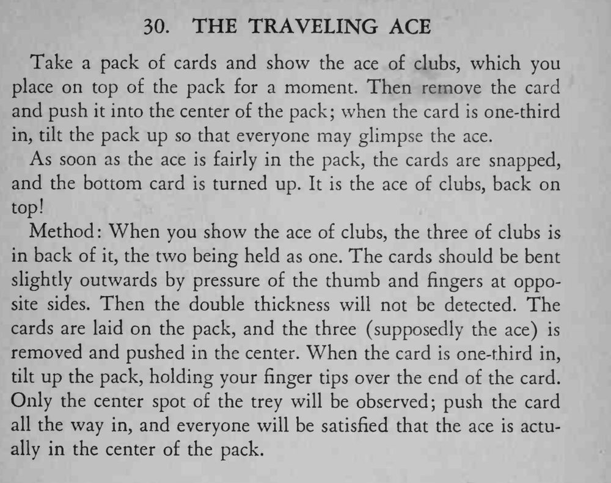

梅花 A 被插进牌堆中部，打一下响指、翻开顶牌，梅花 A 又回到了牌堆顶上。
手指尖要压住牌尾，只露出梅花 3 中间的图案，才不会被看出不是 A。

Take a pack of cards and show the ace of clubs, which you place on top of the pack for a moment. Then remove the card and push it into the center of the pack; when the card is one-third in, tilt the pack up so that everyone may glimpse the ace. As soon as the ace is fairly in the pack, the cards are snapped, and the bottom card is turned up. It is the ace of clubs, back on top! Method When you show the ace of clubs, the three of clubs is in back of it, the two being held as one. The cards should be bent slightly outwards by pressure of the thumb and fingers at opposite sides. Then the double thickness will not be detected. The cards are laid on the pack, and the three (supposedly the ace) is removed and pushed in the center. When the card is one-third in, tilt up the pack, holding your finger tips over the end of the card. Only the center spot of the trey will be observed; push the card all the way in, and everyone will be satisfied that the ace is actually in the center of the pack.